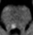
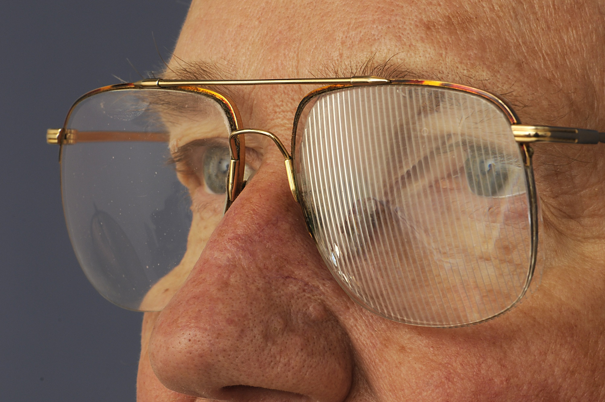

Internuclear Ophthalmoplegia

-
Core clinical features
- Patient reports diplopia, blurred vision, or “something wrong with my vision” on side gaze
-
Trap: patient may not report any symptoms because the eyes often eventually reach normal alignment even in side gaze
- Absent, reduced, or slow adduction of the eye on the side of the lesion, often with jerk nystagmus in abduction of the other eye R INO
-
Tip: adduction may appear normal on pursuit testing, so you must test saccades to bring out slow adduction Subtle Internuclear Othalmoplegia
- Eyes may be aligned in straight-ahead gaze or have exotropia Internuclear Ophthalmoplegia With Exitripia
- Eyes may be vertically misaligned (skew deviation)
- Convergence may be spared
- Pursuit is often saccadic
- Jerk nystagmus is present on side gaze or on upgaze in both eyes
-
Possible accompanying neurologic features
- Ataxia
-
Imaging features
- MRI may be normal or show a brainstem lesion near the Sylvian aqueduct

- Myasthenia gravis
- Third cranial nerve palsy
- Orbital inflammation, trauma, tumor
- Duane syndrome type 2
- Assess ocular versions in pursuit and saccades, looking for slow or deficient adduction
- Look for incomitant exodeviation greatest in contralateral gaze
-
Tip: testing with the optokinetic strip or drum, which elicits repetitive saccades, helps to detect a subtle saccadic adduction deficit
-
Tip: accompanying nystagmus, skew deviation, and ataxia helps confirm a diagnosis of internuclear ophthalmoplegia
-
Trap: a misdiagnosis of partial third nerve palsy occurs often in this setting
-
Tip: the sparing of adduction in convergence helps exclude a partial third nerve palsy, but it is not a trustworthy sign or easy to interpret
-
Tip: if there is no ptosis, pupillary abnormality, or deficit in vertical ductions, the diagnosis of third nerve palsy is unlikely
-
Trap: myasthenia gravis and orbital restrictive syndromes can also mimic internuclear ophthalmoplegia (“pseudointernuclear ophthalmoplegia”), so…
-
Tip: exclude other signs of myasthenia gravis and orbitopathy before making a diagnosis of internuclear ophthalmoplegia
-
Trap: MRI often does not show a correlative lesion because the lesion is small
- Deficit may resolve spontaneously or persist
- Normal MRI favors full recovery
-
Diplopia may be relieved with
- Ground-in or press-on spectacle prisms
- Eye patch
- Partial or complete spectacle occluder Wrap Acound Spectacle Occluder
- Opaque contact lens Opaque Contact Lens
- Extraocular muscle surgery, but it is rarely necessary and may be unsuccessful
